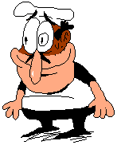
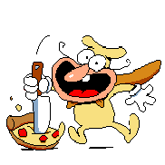
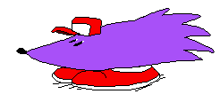

Welcome To The

Fan Site


Pizza Tower is a spiritual successor to the nintendo series "Wario Land" (mainly wario land 4)
You play as a man named "Peppino Spaghetti" as you travel up the "Pizza Tower"
There are 5 worlds, 4 levels each and boss at the end of each world
Characters

Peppino Spaghetti is the owner of his own restaurant "Peppino's Pizza", his plan is to destroy the "Pizza Tower" and take down noise while he's at it as well.
Peppino

The Noise
The Noise likes to have fun with Peppino's adventures climbing and destroying towers and stops him in his tracks just to mess around with him, he owns a jetpack and a pogo stick to move quickly

Snick (It's Him)
Snick The Porcupine is the owner of his own event "SAGE" (Snick Amateur Games Expo)